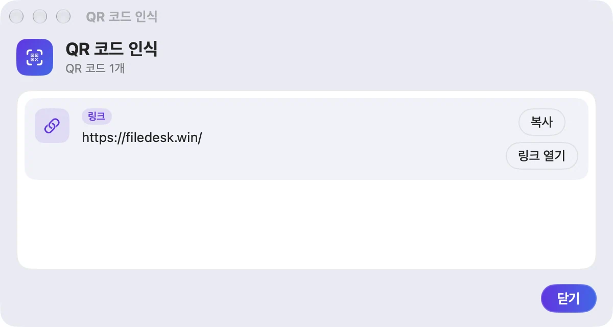
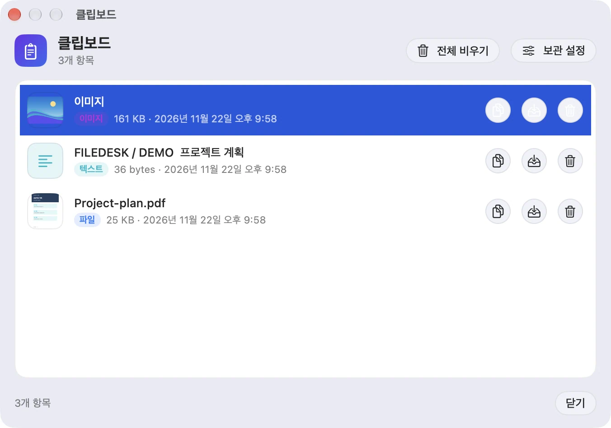
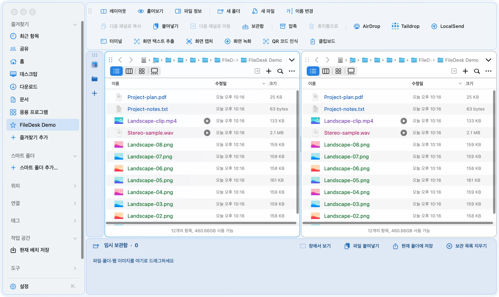
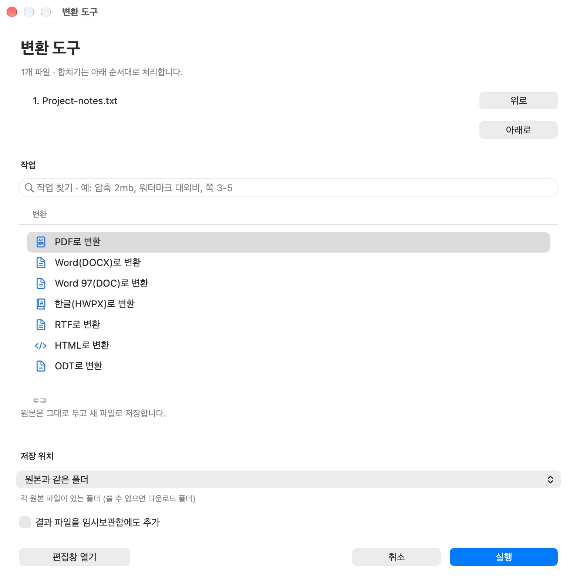
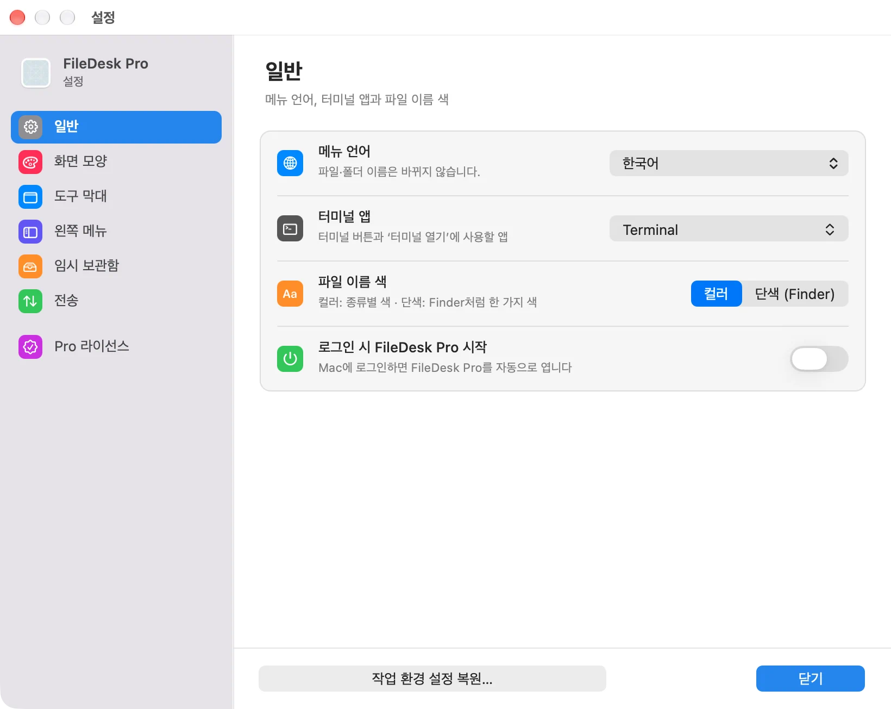
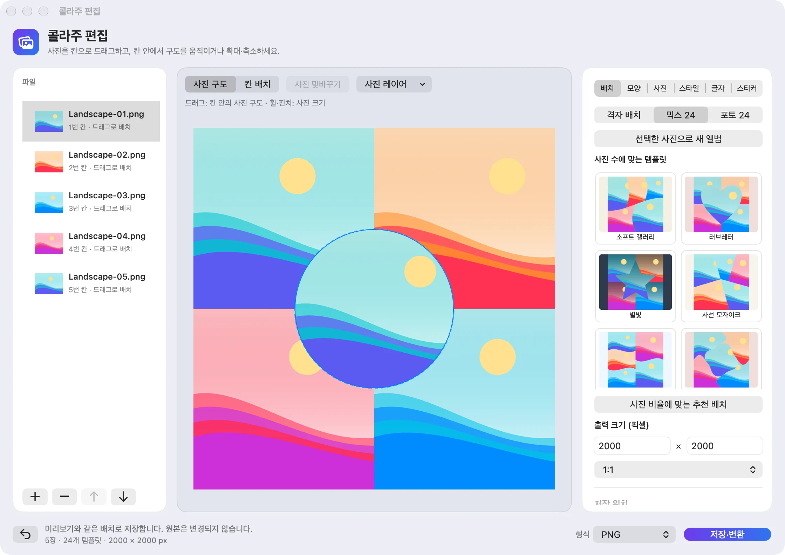
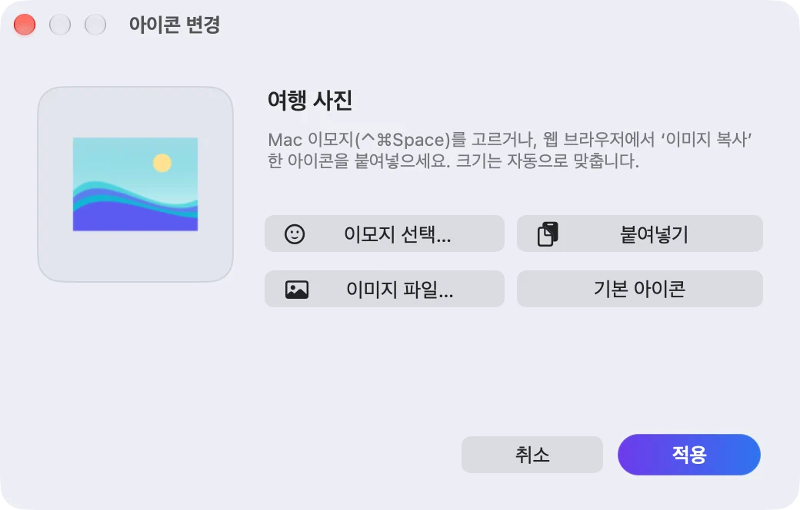

탐색과 검색
분할 창과 탭, Spotlight 검색, 스마트 폴더
폴더를 나란히 열고, 필요한 파일을 미리 보고, 원하는 곳으로 옮기세요. FileDesk는 일상적인 파일 작업을 한곳에 모은 macOS 파일 매니저입니다.
FileDesk 다운로드macOS 14 이상 · Apple Silicon 및 Intel Mac
FILEDESK IN MOTION
분할 창부터 파일 정리까지, 주요 기능을 짧은 영상으로 만나보세요.
한국어 · 0:28
영상 속 문구는 한국어 또는 영어로 표시됩니다. 자세한 사용법은 선택한 언어의 설명서에서 확인할 수 있습니다.

분할 창과 임시보관함, Taildrop 전송, 나만의 테마와 폴더 색상까지 단계별로 안내합니다.
그림으로 보는 사용 설명서분할 패널과 탭으로 작업할 폴더를 나란히 살펴봅니다.
파일 썸네일과 미리보기로 필요한 항목을 찾습니다.
복사·이동·이름 변경과 임시보관함으로 파일을 정리합니다.
여러 폴더의 파일을 한곳에 모아 원하는 폴더로 복사합니다. 보관 목록을 비워도 원본은 그대로입니다.
색상표에서 원하는 테마 색상을 고르고 라이트·다크 모드를 선택하세요.
폴더마다 색상을 지정하고 중앙에 이미지를 넣어 용도를 구분합니다.
Google Drive·OneDrive·pCloud·Dropbox와 서버의 파일을 선택한 창에서 탐색합니다.
Tailscale로 연결된 기기를 선택해 파일을 보냅니다. Mac과 Windows 사이에서도 사용할 수 있습니다.
일괄 이름 변경, 중복 파일 검색과 텍스트 문서 비교로 정리 시간을 줄입니다.
기능별 사용 방법과 연결 조건은 사용 설명서에서 확인하세요.
파일 탐색, 검색, 정리, 전송에 필요한 기능을 작업별로 살펴보세요.
일반판 기능 둘러보기분할 창과 탭, Spotlight 검색, 스마트 폴더
도구 막대 배치, 키보드 단축키, 웹 바로가기
임시보관함, 일괄 이름 변경, 디스크 사용량
서버 연결, 폴더 동기화, 기기 간 전송
파일을 정리하던 창에서 화면을 캡처하고, 이미지·PDF·오디오·영상을 편집하고 변환하세요.
화면·창·영역 또는 스크롤하는 긴 페이지를 캡처하세요. 이미지의 글자를 인식해 수정·복사하거나 임시 보관함에 저장할 수 있습니다. 인식한 글자의 번역은 macOS 14.4부터 지원합니다.

화면·창·영역을 선택해 MP4로 녹화하세요. 시스템 소리와 마이크를 각각 켜고 끌 수 있고, 시작 지연은 0~300초로 설정할 수 있습니다.

캡처 미리보기에서 편집을 열고 펜·화살표·도형·텍스트를 추가하거나 이미지를 자르세요. 왼쪽에서 평면·입체 스탬프와 글자 스타일을 고르고, 오른쪽 레이어 목록에서 주석의 위치·크기·순서를 조절하세요. 워터마크, 흑백·단색 톤, 테두리와 그림자 효과도 적용할 수 있습니다.

픽셀 자와 각도기로 화면을 측정하세요. 화면이나 이미지에 있는 QR 코드를 읽고 결과를 복사하거나 링크를 열 수 있습니다.

도구 막대에서 클립보드를 열고 파일·이미지·텍스트 항목을 고르세요. 스페이스바로 미리보고 위아래 화살표로 다른 항목을 확인할 수 있습니다. 다시 복사하거나 보관함에 저장하세요. 보관함에서도 선택 항목을 미리보거나 위쪽 파일 창에서 열 수 있습니다.

영상·사진·오디오를 타임라인에 배치하고 전환 효과 33종 또는 컷으로 클립을 연결하세요. 자막과 음량을 조절하고, 한 클립의 여러 영역에 모자이크와 흐리기를 각각 적용할 수 있습니다.

시스템 도구 막대와 사용자 도구 모음을 창 가장자리에 따로 배치하세요. 사이드바의 그룹을 접거나 순서를 바꾸고, 하단의 설정에서 작업 공간을 조정할 수 있습니다.

미리보기에서 사진을 자르거나 회전하고, 크기를 바꾸거나 좌우·상하로 뒤집으세요. 배경이나 메타데이터를 제거하고 JPG, PNG, HEIC, WebP, AVIF 등으로 저장할 수 있습니다. 여러 이미지를 한 PDF로 묶거나 이미지 속 QR 코드도 읽을 수 있습니다.

PDF 페이지를 재정렬·회전·삭제하거나 여러 문서를 합치고 나눌 수 있습니다. 글자, 이미지, 도형, 메모, 서명을 주석으로 추가하고 추가한 항목을 이동하거나 크기를 바꾸세요. 영역 가리기, 워터마크, 쪽 번호와 암호 설정도 지원합니다.

편집창에서 문서·이미지 변환, OCR, PDF/A, 웹 최적화, 메타데이터 제거, 비교·겹치기·복구를 바로 선택합니다. 스캔·카메라·화면 가져오기, 문서 묶기와 송장 자료 도구도 제공합니다.

파형에서 구간을 남기거나 삭제하고 속도·음량·음소거를 조절합니다. 스테레오 L/R 파형을 따로 편집하고 미리듣습니다. MP3·M4A·WAV·FLAC·Opus·AIFF 또는 30초 이내 M4R 벨소리로 저장합니다. 오디오 한 채널의 구간 삭제는 싱크 유지를 위해 무음으로 남습니다.

지원 문서의 PDF·Word·HWPX·TXT·RTF·HTML·ODT 변환과 PDF의 XLSX·PPTX 내보내기. SRT·VTT·SMI 자막 변환, 이미지·PDF OCR, 여러 파일 일괄 실행과 저장 폴더 선택을 지원합니다.

7Z·ZIP·TAR 계열, DMG·ISO·Zstandard 등 만들기와 RAR·분할 파일·WPRESS 등의 해제. 형식별 암호·파일명 암호화·분할·압축 수준·개별 압축·검증·프리셋을 지원하며 별도 앱 설치가 필요 없습니다.

파일·폴더를 1분~7일 동안 인터넷 링크로 공유하고 즉시 중지할 수 있습니다. 공유 목록, 접속 시각·IP·브라우저·전송 상태와 CSV 기록을 제공합니다. 받는 사람은 앱 설치 없이 브라우저로 받습니다. 보내는 Mac에는 Tailscale 로그인과 최초 Funnel 승인이 필요합니다.

설치된 iTerm2·Ghostty·Warp 등이나 직접 지정한 터미널 앱으로 폴더와 SSH 작업을 엽니다. 일반판은 macOS 기본 Terminal만 사용하며, 다른 앱 선택은 Pro 활성화 후 제공됩니다.

사진을 최대 20장까지 넣으세요. 2장 이상이면 격자 36종을 고를 수 있고, 모자이크 24종과 앨범 24종도 제공합니다. 사진마다 액자 50종과 마스크 50종을 조합하고 글자를 더할 수 있습니다.

추천 테마 8개에서 시작하거나 이미지에서 색을 추출하세요. 라이트·다크 모드별로 창, 사이드바, 도구 막대 두 개, 파일 창 여섯 개, 보관함, 선택 영역의 색과 투명도를 정할 수 있습니다. 자주 쓰는 색과 팔레트의 이름을 바꾸고, .fdtheme 파일로 저장하거나 다시 불러오세요.

앱·폴더·파일·웹 주소를 버튼으로 등록해 한 번에 여세요. Pro를 활성화하면 복사한 그림을 붙여넣어 버튼 아이콘으로 쓸 수 있습니다.

자주 쓰는 앱·폴더·파일을 런처로 끌어오세요. ＋ 버튼의 ‘파일·폴더·앱 추가’로 선택해도 됩니다. 버튼을 클릭하면 등록한 항목을 엽니다. 웹 주소도 바로가기로 추가할 수 있습니다.

브라우저에서 원하는 아이콘 이미지를 우클릭해 ‘이미지 복사’를 선택하거나, 이미지 앱에서 그림을 복사하세요. FileDesk의 사용자 도구 모음 버튼을 우클릭해 ‘아이콘 변경…’을 열고 ‘붙여넣기’ 또는 ⌘V를 누릅니다.

미리보기에서 그림을 확인하고 ‘적용’을 누르세요. 이미지 비율을 유지해 버튼에 맞춰지며 다음부터 그 그림으로 항목을 열 수 있습니다. 같은 창에서 이모지나 이미지 파일을 선택하거나 ‘기본 아이콘’으로 되돌릴 수 있습니다.
PDF/A와 영역 가리기는 페이지를 이미지로 고정합니다. EPUB은 텍스트 기반, SVG는 이미지 기반이며 변환 시 원본 서식 보존에는 한계가 있습니다. 암호 해제에는 필요한 암호가 있어야 합니다. 송장 XML은 XRechnung 형식이며 한국 전자세금계산서 발행 기능은 아닙니다.
압축 옵션은 형식에 따라 다릅니다. RAR·WPRESS는 해제만 지원합니다. 독립적으로 사용 가능한 외부 엔진을 각 라이선스에 따라 포함합니다.
공유하는 Mac에 Tailscale 설치·로그인과 최초 Funnel 승인이 필요합니다. Mac을 켜고 FileDesk·Tailscale과 인터넷 연결을 유지해야 합니다. 접속 기록은 실명 확인이 아니며, 만료되거나 중지되어도 이미 받은 사본은 회수되지 않습니다.
GET FILEDESK
macOS 14 이상에서 사용할 수 있습니다. → 이 Mac에 관하여에서 칩 또는 프로세서를 확인하세요.
현재 공개 일반판 · 1.25 (빌드 46)
M 시리즈 칩을 사용하는 Mac
Apple Silicon용 다운로드Intel 프로세서를 사용하는 Mac
Intel Mac용 다운로드이 배포본은 Apple 공증이 완료되지 않았습니다. macOS가 실행을 차단하면 출처와 체크섬을 확인한 뒤 시스템 설정에서 제공하는 허용 절차를 사용하세요. Intel 하드웨어 실행 검증은 별도로 필요합니다.
FileDesk의 개발·지원 문의는 ifreemumu@gmail.com으로 보내 주세요. 로그인 토큰이나 비밀번호는 보내지 마세요.
일반판은 개인의 비상업적 개인 용도에 한해 무료입니다. Pro는 구매가 필요하며 1기기 1라이선스가 원칙입니다. 일반판의 기관·회사·업무·상업적 사용도 별도의 유료 이용 허락이 필요합니다. 사용권 및 저작권 안내
한국 시간 기준 · 같은 브라우저의 30분 내 재방문은 한 번으로 집계합니다. 방문 횟수이며 실제 인원 수와 다릅니다.